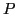
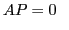
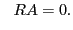
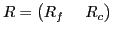
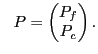
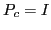
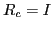
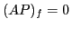
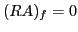

Next: About this document ...
Ray Tuminaro
A Galerkin-based Methodology for Constructing AMG Grid Transfers
MS 9159
PO Box 969
Livermore
CA 94551
rstumin@sandia.gov
Michael Gee
Tobias Wiesner
A methodology is proposed for constructing algebraic multigrid (AMG)
transfer operators. A key feature of the approach is generality
as it can be applied to nonsymmetric systems,
can emphasize accuracy for different user-defined modes,
and can incorporate a variety of
coarsening strategies and grid transfer sparsity patterns.
The basic concept centers on
approximation of idealized Schur complement-based grid transfers via a Galerkin
projection. To explain the idea,
consider the solution of the matrix equations
via an algebraic multigrid algorithm.
Let 
and  represent prolongation and restriction matrices respectively
and now examine
the equations
represent prolongation and restriction matrices respectively
and now examine
the equations
 and |
(2) |
Obviously, only trivial solutions are obtained if  is square
and nonsingular and no restrictions are placed on
and
.
As in classical AMG, let the vertices be partitioned into two sets.
The
-point set corresponds to vertices that remain on the next
coarsest level while all other vertices are in the
is square
and nonsingular and no restrictions are placed on
and
.
As in classical AMG, let the vertices be partitioned into two sets.
The
-point set corresponds to vertices that remain on the next
coarsest level while all other vertices are in the  -point set.
These sets induce a partitioning of
and
:
-point set.
These sets induce a partitioning of
and
:
 and |
(3) |
It is easy to show that idealized Schur complement-based grid
transfers are obtained if we restrict the solution spaces so that

and 
and if we enforce zero residuals
only at
-points. That is,

and

. More
generally, this can be formulated as a Galerkin process where
spaces for solutions and residuals define a projection
of (![[*]](file:/usr/share/latex2html/icons/crossref.png) ). While Schur
complements are generally not computationally attractive,
we investigate other test and trial spaces for residuals and solutions.
In particular, spaces are discussed which limit the sparsity pattern
of the grid transfers while ensuring that a few modes (e.g. constants)
are accurately transferred. We then illustrate that
these spaces lead to practical and efficient AMG grid transfer
operators which can be computed by a few iterations of a Krylov
process.
The final algorithm is closely
related to energy minimizing algebraic multigrid ideas (where the minimization
properties of the Krylov method implicitly define minimization properties and
norms associated with the grid transfer basis functions),
but it is also suitable for nonsymmetric systems.
). While Schur
complements are generally not computationally attractive,
we investigate other test and trial spaces for residuals and solutions.
In particular, spaces are discussed which limit the sparsity pattern
of the grid transfers while ensuring that a few modes (e.g. constants)
are accurately transferred. We then illustrate that
these spaces lead to practical and efficient AMG grid transfer
operators which can be computed by a few iterations of a Krylov
process.
The final algorithm is closely
related to energy minimizing algebraic multigrid ideas (where the minimization
properties of the Krylov method implicitly define minimization properties and
norms associated with the grid transfer basis functions),
but it is also suitable for nonsymmetric systems.
Numerical results are given to demonstrate flexibility/adaptability
and to highlight how this mathematical flexibility leads to some
interesting possibilities for AMG software.
Examples are taken from
applications in fluid flow, semiconductor modeling, and ice sheet fracture.
These includes cases where
grid transfers with irregular sparsity patterns are needed
as well as some
challenging nonsymmetric linear systems.
Next: About this document ...
root
2012-02-20